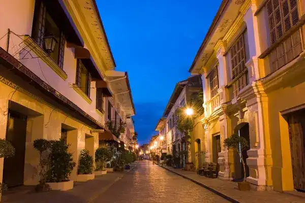
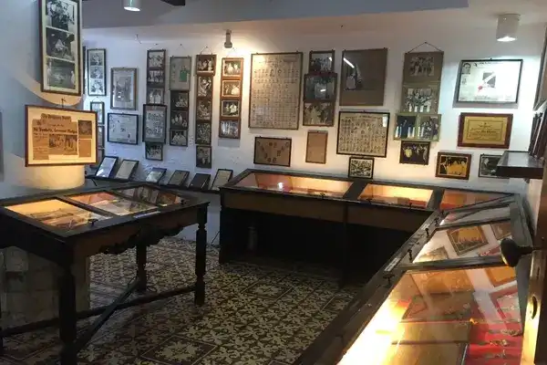
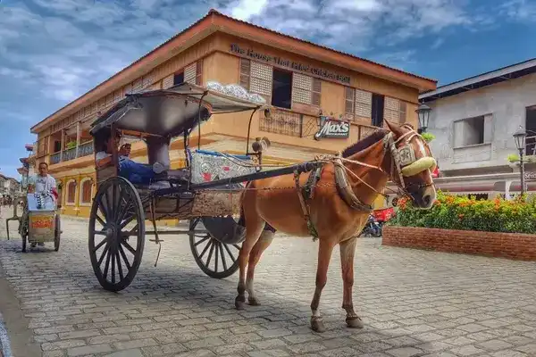
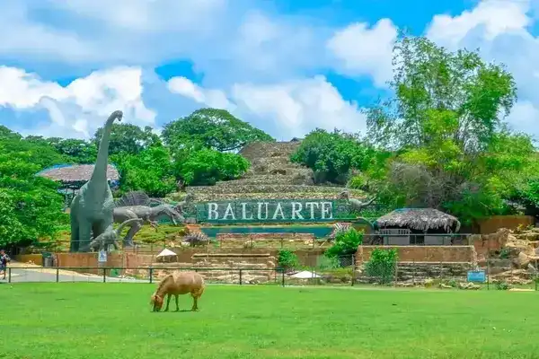
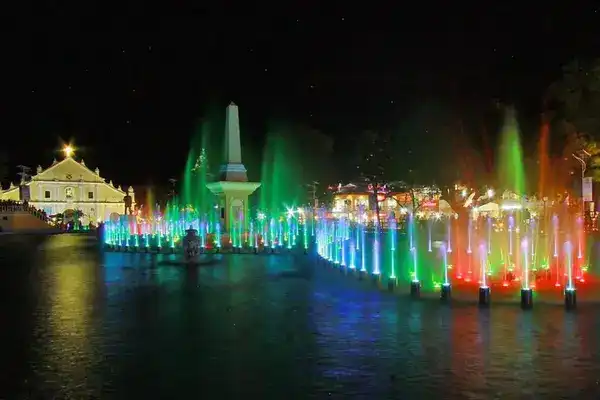

Quick Links
Tourist Spots Map

Local Eats

Vigan City Hotlines
Fire Station: 1600 & 722-0990
Police: 166 & 722-0890
Public Safety: 711
Health Office: 722-6785
Gabriela Silang Hospital: 722-3362 & 722-2781
ISECO: 722-2085 & 0917-5793-517
Mayor's Office: 722-2466
What To Do in Vigan?
1. Walk Through Calle Crisologo: Immerse Yourself in History
Experience the timeless beauty of Vigan by taking a leisurely stroll along Calle Crisologo, a UNESCO World Heritage Site. Admire the well-preserved Spanish colonial architecture, shop for local crafts and souvenirs, and indulge in authentic Ilocano cuisine at the quaint cafes and restaurants lining the cobblestone streets.
Budget: $5-10 USD
2. Visit the Crisologo Museum: Delve into the City's Rich Heritage
Explore the Crisologo Museum, located within the ancestral home of the prominent Crisologo family. Discover artifacts, heirlooms, and memorabilia that offer insights into the history and culture of Vigan. From antique furniture to vintage photographs, this museum provides a captivating journey through the city's past.
Budget: $2-4 USD
3. Ride a Kalesa: Experience Nostalgic Transportation
Step back in time and take a traditional horse-drawn carriage ride, known locally as a kalesa, around Vigan's historic streets. Let the rhythmic clip-clop of the horse's hooves serenade you as you pass by colonial-era buildings, churches, and plazas. It's a charming way to explore the city and capture memorable photographs.
Budget: $5-10 USD per ride.
4. Explore Baluarte: Encounter Wildlife in a Picturesque Setting
Spend a day at Baluarte, a sprawling estate owned by former governor Chavit Singson. Home to a mini zoo featuring various species of animals, including tigers, deer, birds, and reptiles, Baluarte offers visitors the opportunity to interact with wildlife amidst lush greenery and scenic landscapes. Admission to Baluarte is free, but donations are welcome.
Budget: $0-5 USD.
5. Try Traditional Ilocano Cuisine: Indulge Your Taste Buds
Sample authentic Ilocano dishes at local eateries and restaurants scattered throughout Vigan. From empanada, a savory pastry filled with meat and vegetables, to bagnet, crispy deep-fried pork belly, and pinakbet, a flavorful vegetable stew, Vigan's culinary scene promises a gastronomic adventure that celebrates the region's unique flavors.
Budget: $3-8 USD per meal.
6. Witness the Dancing Fountain at Plaza Salcedo: Evening Spectacle
As the sun sets, head to Plaza Salcedo and marvel at the mesmerizing Dancing Fountain show. Set against the backdrop of the historic Plaza Salcedo and illuminated by colorful lights, the fountain comes to life with synchronized water, music, and light displays, creating a magical atmosphere that captivates audiences of all ages. Best of all, it's free for everyone to enjoy.
Budget: $0 USD.